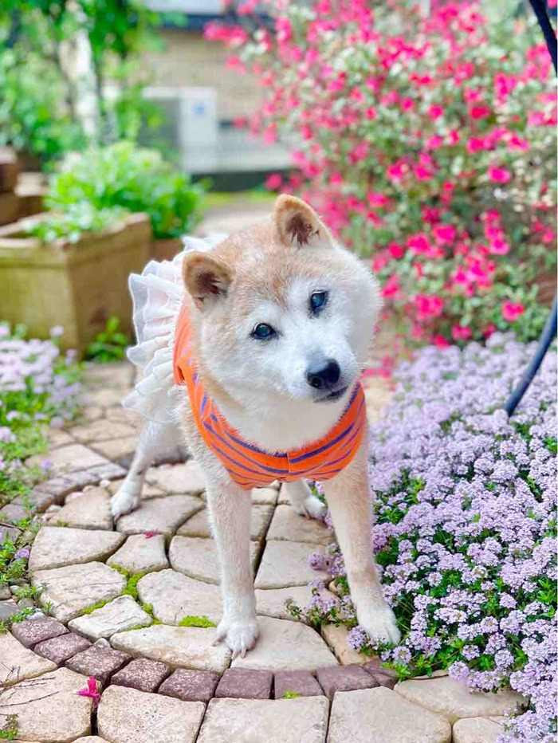

かぼちゃんは
本日５月２４日
午前７時５０分に
深い眠りにつきました。
昨夜はいつも通り
ご飯を食べて
お水もたっぷり
飲みました。
窓からは
柔らかな光が射し込み、
窓の外では
鳥たちが歌う
美しい朝に、
私に撫でられながら
眠るように
そっと逝きました。
長い間かぼちゃんを
愛して下さったみなさま、
本当に
ありがとうございました。
かぼちゃんは
世界一幸せな
犬だったと思います。
そして私は
世界一幸せな
飼い主でした。
かぼちゃんは
今もまだ
にこにこ笑って
シッポを振って
私に寄り添って
くれていると思います。
きっと
これからもずっと。

５月２６日（日）に
かぼちゃんのお別れの会を
します。
成田市公津の杜の
フラワーkaoriにて
時間は
午後１時から４時まで
です。
車でお越し
くださる方は
駐車場は
ありませんので
近くのパーキングに
停めて下さい。
涼しい季節になったら
佐倉ふるさと広場で
楽しい
お別れ会をしたいと
考えています。
取り急ぎ
ご報告とご連絡でした。
みなさま、
本当に今でありがとう！
心から感謝
申し上げます。
５月２６日（日）に
かぼちゃんのお別れの会を
します。
成田市公津の杜の
フラワーkaoriにて
時間は
午後１時から４時まで
です。
車でお越し
くださる方は
駐車場は
ありませんので
近くのパーキングに
停めて下さい。
涼しい季節になったら
佐倉ふるさと広場で
楽しい
お別れ会をしたいと
考えています。
取り急ぎ
ご報告とご連絡でした。
みなさま、
本当に今でありがとう！
心から感謝
申し上げます。
＊＊＊＊＊＊＊
「かぼすちゃんとおさんぽ。」の
更新通知が受け取れます！
登録・フォローお願い致します(^^)
↓

２ポチ
↓
コメント
コメント一覧 (334)
ブログを読み始めたのは、初めての柴（♀）を飼い始めてからのまだ数年ですが、とってもいい子のかぼちゃんと、温かくユーモアのあるママさんの記事にすっかりファンになっていました。
かぼちゃんも、かぼちゃんご家族もなんて幸せだったんだろうなぁ〜、と本当に思います。
かぼちゃん、お空で皆と仲良く遊んでね!
心よりご冥福をお祈り申し上げます。
kabosu112
が しました
しました
かぼすママさん、これまでの献身の介護、お疲れ様でした。尋常でない大変さだったと思います。そしてそれを日々伝えていただき、本当の愛情ってなんなのか、教えていただきました。
私も昨年11月に、16歳の愛犬の柴犬を看取りました。
症状がほぼかぼちゃんと同じで、夜に家をクルクル徘徊し、最後の数ヶ月は立てなくなり。
毎夜夜泣きが激しくて、狂ったように泣き叫びました。
辛そうなのは明らかでした。でもすごく生命力の強い子で、自然死だとしたらあと半年程度はそういう日々が続いたと思います。食欲もありました。
私なりにできることは全てやっていましたが、頑張り続けてもこの子も自分もボロボロになるだけだと、判断の末に辛い選択をしました。
なので、かぼちゃんとママさんの頑張る姿を見るたびに、最期を一緒に過ごす貴重さと辛さがわかるのと同時に、実は辛さも感じていました。本当はこうして最後まで見てやりたかったと。
でも人にも犬にも、それぞれの宿命と状況があり、かぼちゃんがこうして生き切ったことも、私の犬が辛そうに私に訴えたことも、きっとそういうことだったのだと思います。
しばらくかぼちゃんロスが続くと思いますが、お身体を大切にしてください。
かぼちゃん、よく頑張った！あなたが世界中のどれだけの人のハートを掴んだことか。
そっちの世界は辛い身体もないから、存分にかぼす節をきかせてのんびりしてね。
kabosu112
が しました
しました
愛の力は永遠に消えないと思います。
生ききったかぼちやん、がんばりましたね、、、そしてご家族のみなさまありがとうございました。
kabosu112
が しました
しました
kabosu112
が しました
しました
kabosu112
が しました
しました
虹の橋でうちのラッキーとも仲良くしてあげてね。
かぼすちゃんの笑顔で皆んなが幸せな気持ちになれました。
あなたはスーパーウルトラ素敵なワンコです。
ママさんも素敵です。
あなたのかぼすちゃんへの愛の深さに心から尊敬しています。
まずは体調には気をつけてくださいね。
kabosu112
が しました
しました
kabosu112
が しました
しました
優しい気持ちをありがとう
楽しいお話しをありがとう
ママさん、みなさんどうもありがとうございます。
kabosu112
が しました
しました
ありがとう！
kabosu112
が しました
しました
ウチの子とは
天国の入り口で家族を待っててねって
約束しました
かぼちゃんもまた 必ず みんなに 会えるよね❣️
kabosu112
が しました
しました
その後もかぼちゃんファミリーに会いたくて、何度かイベントに参加しています。
近所（南港）であった時は、外国の人達からうちのももがかぼちゃんに間違われて、嬉し恥ずかしだったのに覚えています。
そのももも昨年旅立ちました。
お空で逢えたらいいですね。
かぼちゃんのために、全力でやれることは全てされたかぼちゃんファミリーには本当に頭が下がります。
かぼちゃん、幸せだったね。
kabosu112
が しました
しました
kabosu112
が しました
しました
kabosu112
が しました
しました
ほのぼのブログから壮大なプロジェクトにまで発展、遂行されて。
かわいいかぼすちゃんに長い間癒やしていただきました。ありがとうございました。
ママさん、パパさん、お兄さん、しばらくは喪失感との戦いになると思いますが、どうぞお身体ご自愛下さい。
kabosu112
が しました
しました
ママさんいつも幸せなブログをありがとう
kabosu112
が しました
しました
何時もと同じ朝だけど かぼす家の皆さんやかぼちゃんファンの皆さんにとっては、胸が張り裂けそうな一日でしたよ
一度も会う事は出来ませんでしたが、明日私もそっと かぼちゃんに会いに行きますね
我が家の玄関には、今年のかぼちゃんカレンダーが毎日を見守ってくれています
ありがとう かぼちゃん
ありがとう かぼ母さん かぼ父さん
こちらのブログに出会えた事に心から感謝してます 合掌
kabosu112
が しました
しました
かぼちゃんとママさん家族の毎日を笑ったりハラハラしたり長い間楽しんできました。
住宅事情で飼えないためブログを見させてもらうのが本当に楽しみでした。
かぼすちゃん達を見て大切に生きていくことを学んだりもしました。
さよならは悲しいけど、ありがとうの気持ちでいっぱいです。
私は旅行にも全くいかないので、ママとパパとかぼちゃん三人の旅行記も素晴らしくてかぼちゃんが楽しんでいる様子に幸せな気持になりました。本当に楽しかったです。
感謝感謝です。
kabosu112
が しました
しました
こんなに沢山の人に可愛がられて愛されて本当に宇宙一幸せな子ですね
たくさんの思い出を残してしっかりと生き抜いて、あっぱれな犬生🐕 大好きなかぼ母さんに撫でてもらって逝けてこんな幸せなことはないと思います😭
🌈の橋組は今頃「かぼすちゃんが来るって〜」と大騒ぎしてる時思います。
どうか安らかに🙏
今まで本当に本当にありがとう😭
大好きだよ❤️かぼちゃん！またね!
kabosu112
が しました
しました
日常に大いに励まされました。かぼちゃんとママさん、永遠に大好きです。ブログが続くこと
を願って、これからも応援し続けています。
kabosu112
が しました
しました
ずっと前から心配していました。
皆様のご尽力、18歳まで頑張ったかぼちゃんの命､､､
どれだけの人たちが、かぼちゃんに力付けられ、癒されたことか、はかりしれない事でしょう。
忘れはしません。かぽちゃんのこと。
きっと、きっと、皆さんもそうでしょう、、、
kabosu112
が しました
しました
とても 寂しいですけど 世界中の人々を癒して 幸せにしてくれた かぼちゃんは いつまでも みんなの心の中にいますよ😊
まだまだ お空には行かないで 元気で自由に家族の側にいますね💕
kabosu112
が しました
しました
可愛い可愛いかぼすちゃん、ありがとうございました。
kabosu112
が しました
しました
kabosu112
が しました
しました
心のどこかではかぼちゃんがもう
自由な身体に変わって
楽しく行きたい処へ駆けている気もします〜🐕
それはヨッカタかと……💚
きっと皆んなと一緒のお散歩だと
かぼちゃんは感じていますね💓
涙が溢れて来るのは仕方ない(人間だもの…)
かぼちゃんご一家に出会えて幸せでした
あ❣️これからも続きますよね〜
銀ちゃん達のことも心配ですウ
どうか皆さまお疲れが出ませんように🙏🙂
そして
かぼちゃんが楽しめるお別れ会となりますよう
お祈りしていますっ❣️✝️
(みなさんのコメントを読むとヒックヒックなるので
しばらく経ってからにします😭)
kabosu112
が しました
しました
(日本語がわからないので、これ以上言えなくてごめんなさい。アメリカからあなたとカボスのご冥福をお祈りします。)
kabosu112
が しました
しました
あっちゃんうーちゃんがお空に上がってとても寂しい時かぼすちゃんの笑顔☺️に癒やされてブログを楽しみにしてきました～😄
1日たっても寂しさは拭えないけどお空でニコニコ笑顔のかぼすちゃんがみんなを見守っていますよね🥰
ママさんパパさんご家族の皆さん
とても寂しいと思います
体調に気をつけてお過ごし下さい😊
kabosu112
が しました
しました
かぼちゃんにこのHPで出会って、ずっっっと観ていました。
かぼちゃんの賢さ、可愛さに惹かれて、それまでも和犬一択でしたが、昨冬ついに豆柴（白柴）を飼いました。
かぼちゃん、本当にありがとう🎵かぼちゃんはいつまでも特別な存在です✨
kabosu112
が しました
しました
ママさん、看病お疲れ様でした。
ブログのかぼすちゃんが少しずつ小さくなっていくのを感じながら、いつかはこの日が来ることはわかっていたのですが、今日は朝から涙が止まりません。
たった１回しか会ったことがない私でもこんなに悲しいのに、ご家族の皆さんは、どんなにお辛いことでしょう。心中お察しいたします。
でも虹の国には、ケンちゃんも、うちの十兵衛も、もしかしたら、かぼすちゃんの家族もいるかもしれないから、寂しくないね。みんなで仲良く暮らしてね。
kabosu112
が しました
しました
さようなら、ありがとう、かぼちゃん。
kabosu112
が しました
しました
四季折々の綺麗なお花を見ながらゆっくりとお散歩したり、大好きな飼い主さんと一緒に旅行に行ったり、園の子供達と一緒に過ごしたり‥
うちの柴子は、怖がりで人混みが嫌いなので、とっても素敵だなぁ、と思って、ブログを見ていました😊
ママさん達の深い深い愛情に包まれて、穏やかな最期を迎えることが出来て、寂しいけど、本当に良かったと思います。
かぼちゃん、今までありがとう!!天国で、みんなと楽しく過ごしてね。
kabosu112
が しました
しました
天国でかぼちゃんとお友達になってくれたらなと思っています。本当に愛溢れるブログを書いてくれてありがとうございました。
kabosu112
が しました
しました
Thank you for everything. Rest in peace, little Doge, we will never forget you. You have brought so many happy moments to humanity. And you, Kabosu-mama, stay strong! Greetings from Europe, Hungary. 🐕❤️
カボスちゃんへ、
今まで本当にありがとう。安らかに眠ってください、小さなドージ。私たちはあなたを忘れません。あなたは人類にたくさんの楽しい瞬間をもたらしました。そして、カボスママ、強くいてください！ヨーロッパ、ハンガリーからの挨拶を送ります。🐕❤️
kabosu112
が しました
しました
今まで本当にありがとう。
かおりさんの花屋さんで
かわいいかわいい
かぼちゃんに会えた時、
やっと会えたーって
すごく嬉しかったよ。
毎日、笑顔にしてくれて
幸せな気持ちにしてくれて
ありがとう。
またまたいつか
どこかで会おうね。
kabosu112
が しました
しました
kabosu112
が しました
しました
kabosu112
が しました
しました
たくさんの笑顔をありがとう
kabosu112
が しました
しました
たくさんたくさん ありがとう(*^-゜)vThanks!
保護犬だった黒柴の豆吉が虹の橋を渡ってから かぼすちゃんのこと ずっと見てましたよ 天国で豆吉に出逢ったら ボーイフレンドのひとりにしてね
ありがとう
kabosu112
が しました
しました
先に逝った動物愛護センターの仲間たちの分まで、最期までよく頑張りましたね。
つらい時期を乗り越えて幸を掴んで、
形は変わってもこれからもずっと幸せでいると思います。
かぼすママさん、ご家族様、
かぼちゃんたちのカワイイ姿をたくさん載せてくださってありがとうございました。
悲しみが癒えるにはお時間がかかると思いますが、どうかご自愛下さいね。
kabosu112
が しました
しました
かぼすちゃん、どうか遠いお空の上でも元気でいてください。ご冥福をお祈りします。
kabosu112
が しました
しました
かぼちゃん みんなに可愛がられて いろんな経験もして 素晴らしい犬生だったね
お空の上でも みんなと仲良く そして、お空の上から みんな幸せになるように見守っていてね！
かぼちゃんを知ったのはチコママのブログを見るようになってから、そして保護犬の事も かぼママさんのブログからです、ブログを始めたきっかけもです、これだけ有名になってしまったかぼちゃんですが 私の心では元気だった頃のかぼちゃんがいますょ
ありがとう かぼちゃん、お疲れ様でしたね。
kabosu112
が しました
しました
良いおうちに来れて良かった 最後までお散歩行かれたね かぼちゃんのこと、ずっと忘れないよ
ありがとう かぼすちゃん
kabosu112
が しました
しました
かぼすちゃんの金色のまつげ、かわいい笑顔にたくさん癒やしてもらいました。本当にありがとうございました。ゆっくり休んでください。かぼすママさん、かぼすちゃんの最高の笑顔を届けて下さって本当にありがとうございます！
kabosu112
が しました
しました
私は今朝明け方にスマホ見て知りました。実はうちにも、そちらへ行こうかな、と支度してる15歳の柴犬が居ます。いやいや、そんな急がないでよ、と焦る私は、さっき動物病院から帰宅した所です。
ひと口でも食べて。どうしたら楽？痛い？苦しい？撫でようか？
わかってない自分にイライラ
私はとにかく、この子の苦しみが無いように願うしかない無力な飼い主で。
かぼちゃん、めっちゃ楽しい犬生でしたね♥️
かぼパパさん、かぼママさんと一緒に歩いたブログは、かぼちゃんが、イェーイ✌️といつも輝いてて。
病気も大変だったはずなのに、かぼママさんパワーが凄かったね。
かぼママさんに、ありがとう、と顔を見つめて言ってたね。
いい子だな、かわいいなあ。
かぼちゃん。
かぼちゃんに会えて私も幸せでした。
ありがとうございます。
kabosu112
が しました
しました
つーちゃん、銀ちゃん、茶トラくんなどなどを見つめるとても優しい目とまつ毛に笑顔、全てが大好きでした。かぼママさんの温かみのある文章に幾度となく優しい気持ちにさせていただきました。刈谷ハイウェイオアシスでお会いできた事、心の宝物です。
遠からず、城址公園に必ず会いに行きますからね。これからも沢山のスクショ画像を見直したりしますね。心よりありがとうございました。合掌。
kabosu112
が しました
しました
笑顔を見せてくれてありがとうです。
温かいご家族に迎えられて更に新たな
お仲間との🐱毎日はかぼすちゃんにも
凄く凄く大切な時間だったかと…🍀
お年をとってからも力を尽くし愛情込めて
お世話されたかぼすママを尊敬しています。
今はお空の上でご家族の事見てはると思います。
かぼすちゃんの御冥福心よりお祈り申し上げます。
kabosu112
が しました
しました
かぼちゃん天国で沢山の柴っこと🐕️🐕️🐕️遊んで下さい
kabosu112
が しました
しました
かぼちゃんとご家族皆様に
これからも素晴らしい毎日が
訪れますように🥹
kabosu112
が しました
しました
ありがとうね。かぼちゃんには楽しいことも命の大切さもいっぱい教えてもらいました。
本当にありがとうね。
ママさん、ご家族の皆様にも感謝です。
kabosu112
が しました
しました
かぼママさん、かぼパパさん、ご家族の皆様にお悔やみ申し上げます。
偶然出会ったブログでかぼちゃんを知り、ママさんの心地よい文章にいつも癒され、いつもかぼちゃんとお散歩していました。
広島と神戸にかぼちゃんに会いに行った事、私の大事な大事な想い出です。
世界中の人に愛されたかぼすちゃん。
本当に本当にありがとう😊ずっと大好きです❤️
ママさん、パパさんお身体を大事になさって下さいね。
kabosu112
が しました
しました
どうか、安らかに･･･また会いましょう💓
kabosu112
が しました
しました
kabosu112
が しました
しました
愛犬の散歩場所を探していて「佐倉城址公園 犬」でかぼすちゃんを知り、長い間ブログを拝見させていただきました
城址公園でかぼすちゃんやママさん、パパさんにお会いする事もありとても幸せな時間でした
今まで沢山の笑顔をありがとう❤️
kabosu112
が しました
しました
kabosu112
が しました
しました
kabosu112
が しました
しました
優しいママとパパとご家族、そしてたくさんの人に愛されて幸せな犬生だったね！
かぼちゃんのブログ、楽しく拝見しては癒され、いつもhappyなパワーをもらっていましたよ。
かぼちゃんを迎えた後、つーちゃん、ぎんちゃんが仲間入りして、あれよあれよという間に かぼちゃんが有名になって、オニギリ君が加わって・・・時の経つのは早いですね。
かぼママさん、そんな様子をブログで見せてくださってありがとう！
かけがえのないものを失った悲しみと喪失感、時間薬でしか癒せないとは思いますが、
どうかお体をご自愛くださいね。
kabosu112
が しました
しました
そして、かぼすちゃん、私がかぼすちゃんのことを知ってからあまり長くはありませんでしたが、幸せな犬生を生きることが出来ましたか。きっとできたと信じてます。
今までありがとうございました。
かぼすママさんも、ブログ更新ありがとうございました。
いつか会える日を待ち望んでいます。
さようなら。そしてまたいつか。
kabosu112
が しました
しました
かぼすちゃんが世界で有名になった時のお話をテレビで見てママさんも友人の方も素晴らしいな方なんだなと思ってました♪
かぼすちゃんはドージーのアイコンとして使われていたので、テレビの前から知ってました♪
きっと世界中の方々が訃報に悲しんでいると思います。
可愛いお顔はこの先もずっと皆さんに忘れられずに可愛がられて行くと思います♪
優しいママさんの元に家族として来てから、かぼすちゃんもママさんもみんなで幸せでしたね♪
どうぞ安らかに。
kabosu112
が しました
しました
kabosu112
が しました
しました
kabosu112
が しました
しました
姿形はなくなっても思い出の中に生き続けていきますね。
kabosu112
が しました
しました
今、かぼちゃんはタイトルの写真のように（つーちゃんと一緒の）あんな安心した顔をして眠っていると思います。ゆっくり休んでね。
かぼちゃんはママさんに出会えて、本当に幸せでしたね。ブログを覗かせて貰って、私達も幸せでした。ありがとうございました。
kabosu112
が しました
しました
ご報告、ありがとうございます
かぼちゃんが高齢のことから、ある程度のお覚悟はお持ちだったとは思いますが
お辛い中、ありがとうございます
かぼちゃんは、ご家族にとっても、世界中の皆さまにとっても、
幸せの象徴であり、可愛さそのものだったと思います
我が家のわんこも18歳と14歳で、色々と高齢化の症状も増えてきました
それこそ、私も家族もある程度の覚悟を持って接しています
いつどうなるかわからない日々を、できるだけ毎日幸せに過ごせるよう、
頑張っております！
介護にしても、すべてが幸せと思える・・・
毎日がただただ楽しくって（*＾。＾*）
それは、かぼすママ様にもお教えいただいたことでもあります
毎日をただ一生懸命に過ごす♪♪
幸せだと感じることができるのも、それもまた幸せだと思います
かぼちゃんはきっとこれからもずっと、心の中にいつづける、そしてずっと
かぼすママ様と一緒にお散歩し続けるのだと思います
ご冥福を心よりお祈り申し上げます
kabosu112
が しました
しました
kabosu112
が しました
しました
たくさんのかぼちゃん笑顔忘れません 合掌
kabosu112
が しました
しました
この世に姿形はなくなり寂しいですが沢山のすてきな思い出をありがとうございました。
kabosu112
が しました
しました
安らかにお眠りください
だいすきです
kabosu112
が しました
しました
ずいぶん前、訳あって辛い時期に
かぼママさんのブログに出会い
とても気持ちが救われました。
可愛い可愛いかぼちゃんを見て笑顔にも
なれました。
かぼちゃんへ
ありがとう、ありがとう。
2回もかぼちゃんに会えたのは
大事な思い出です。兵庫からご冥福をお祈りします。
kabosu112
が しました
しました
kabosu112
が しました
しました
かぼちゃん！ママさんパパさんと出会え、たくさんの愛に囲まれ、本当に楽しく幸せな犬生でしたね。
生きることができなかった仲間の分まで、かぼちゃんは長生きして、大切なことをみんなに教えてくれたように思えてなりません。
ブログでかぼちゃんとママさんに会うことがてき、幸せな気持ちにさせていただきました。本当にありがとう。
ママさん、お仕事をしながらの献身的な介護おつかれさまでした。
我が家の愛犬も、昨年末、半年の介護の末お空に旅立って行きました。
かぼちゃん、お空でわが家の愛犬くるみとも仲良くしてやってね。
くるみにもかぼちゃんと仲良くねと伝えておくね。
kabosu112
が しました
しました
kabosu112
が しました
しました
昨日、うちの柴犬が旅立ちそう、と書いた者です。
まさか、とドキドキしていますが、
さきほど、16時ちょうどに虹の橋を渡りました。
午前中、立てなくなったので、サポーターとか何かネットで探さなきゃと焦りながら、用事で出かけ、帰宅した時はコタツにもたれて眠っていて。10分くらいして、あれ？おなかが動いてない？と触ると、早くも旅立ってました。
もしかして、私の帰宅を待ってくれてたのかな。
足のサポーター、間に合わないなんて、不甲斐ない飼い主で本当にごめんね。
かぼちゃん、うちの柴犬はかぼちゃんみたいじゃなく、じゃじゃ馬娘です。
ですが、私が大ファンのかぼちゃんのお近くに居たいと、飛んで行ったのかもしれません。
ちょろちょろしてたら、良かったらお仲間に入れて頂けたら幸いです。
私は、まだ、混乱と涙でどうにもならずです。
こちらにこんなコメントを書いて大変失礼しました。
kabosu112
が しました
しました
kabosu112
が しました
しました
少しでもお声をかけられたら、と思って参加したのですが、目の前にしたら泣けてしまって、全然お話も出来ません。むしろかぼすお母様に励ましていただくような始末で、申し訳ありませんでした。
「紅白で送り出してあげたいくらい」とおっしゃったお母様のお言葉に、本当に幸せな時間だったことを感じました。お父様にもお会いできて嬉しかったです。
ありがとうございました。
どうか皆様お身体をご自愛ください。
kabosu112
が しました
しました
kabosu112
が しました
しました
昼休みに可愛いかぼちゃんをみて癒され、
かぼママさんの優しい文章を読んで元気をもらっていました
仕事が軌道に乗ってから忙しさにかまけ、ブログを拝見する機会は減ってしまいましたが
色んな場所で活躍するかぼちゃんのニュースを見るたびに
我が事のように嬉しく誇りに思っておりました
かぼちゃんの訃報を聞いて、私のような部外者ですら
こんなに寂しくて悲しいので、
かぼママさんたちご家族の悲しみはどんなにかと思います
かぼちゃんは間違いなく、
世界で1番幸せなワンコの1人だと思います
かぼちゃん、今までありがとう
ご家族の皆様、素敵なかぼちゃんを
見せてくださってありがとうございました
kabosu112
が しました
しました
そらが家に来る前からみていたよ
そらが家に来るきっかけになった柴犬さんの1人です
本当にありがとう！
kabosu112
が しました
しました
かぼちゃん 家族のみなさま おつかれさまでした
我が家にも16歳の柴犬が居てしばらく介護状態でしたが今月23日に天国へ旅立ちました
かけがえのない存在でした
ペットロスでとても辛い心境でしたがかぼちゃんを知って元気が出てきました
天国でかぼちゃんと会えたら仲良くしてほしいなと思います
かぼちゃんのご冥福をお祈りいたします
kabosu112
が しました
しました
かぼちゃんご一家が湯郷温泉に来られる時に『ぜひ会いに行きたい‼️』と思いながら、仕事を終えて行った時には時間が遅くて会えませんでした。
ずっと元気でいて欲しいと思っていましたが、お母さん・お父さんや周りの方々に大切にされてきっと幸せだったことと思います。
かぼちゃんのように幸せな日々を送れるわんこばかりでありますように。
kabosu112
が しました
しました
かぼちゃんは本当に、幸せだったと思います！
kabosu112
が しました
しました
安らかにお眠りください。
かぼす家の皆さまも、本当にありがとうございました！
これからもかぼちゃんは、天国からかぼす家をずっと見守ってくれていますね。
kabosu112
が しました
しました
おととしの秋に天国に旅立った愛娘ごまも、実はかぼちゃんと同じ境遇でした。だからすがるような思いでかぼちゃんを応援させていただいてました。かぼちゃん、心からありがとう。
本当に本当にありがとう。そしてお疲れさま。かぼちゃん、大好きだよ。
kabosu112
が しました
しました
かぼちゃんがまだ有名になるずっと前から
ブログを見て一緒に過ごしてきました。
うちのララコがかぼちゃんと同じ歳で、
同じ柴犬で、身近な家族のような気持ちだったからです。
ララコは昨年の4月4日に先に旅立ってしまいましたが、
かぼちゃんはずっと元気で、頑張れ頑張れって応援してました。
札幌の手稲の前田公園でかぼちゃんとママさんとパパさんとファンの皆さんと一緒にお散歩できたのはいい思い出です。
いつかは必ず来るお別れですが
やっぱりとても寂しくて悲しいです
残念です
ママさんもしばらく心にポッカリと穴が空いたように寂しくてたまらない日々が続くと思います
ご自愛下さいね
かぼちゃん、
本当にたくさんの幸せをありがとう
これからのかぼちゃんに会えないのは
とてもとても寂しくて悲しいけれど
天国で楽しくお散歩してね
ママさん、パパさん
かぼちゃんとの素敵な時間を共有してくれたことに感謝します。
本当にありがとうございました。
kabosu112
が しました
しました
９年前、柴犬の北斗を亡くし落ち込んでいた時
『かぼすちゃんとおさんぽ』に出会いそれ以来
元気を頂いてきました
１日花屋さんでかぼちゃんとママ・パパさんに
お会い出来た時は感無量でした
ママさんはじめご家族の皆様
心よりお悔み申し上げます
かぼちゃんと出会わせて下さり感謝しております
御一家の一員として過ごせたかぼちゃんは
とても幸せだったことでしょう
悲しみは尽きないと存じますが ご自愛下さい
kabosu112
が しました
しました
会った事ないのですが、いつもブログを拝見し、癒しと元気を頂いてました。
かぼちゃんはとっても幸せなワンコ人生でしたね。
かぼすママさんやぱぱさん、ご家族の方、楽しいワンコ友達と出会えて、一緒に過ごせて、終わりよければ全てよし、そのものですね。
私はかぼすママさんの前向きさにもびっくりし、私もそう考えれるようになりたいなあといつも思っています。
かぼちゃん、ありがとう！
kabosu112
が しました
しました
kabosu112
が しました
しました
昔我が家に居てくれた芝ワンコの面影を重ねながら、拝見させてもらっていました。
かぼちゃんとママさん達が
実現なさった愛に溢れる偉業を忘れません。
永遠に愛しています。💓♥️❤️
kabosu112
が しました
しました
私も5/21に15年飼っていた犬（ジャックラッセルテリア）を亡くしました。
落ち着いたらふるさと広場に行ってかぼすちゃんモニュメントを見たいです。
kabosu112
が しました
しました
kabosu112
が しました
しました
今までありがとうございました。
いつもブログでかぼすちゃんの写真を見るたびに、元気をもらっていました。
それがなくなることを考えるととても悲しいです。
でも、かぼすちゃんは世界に幸せを一杯配ってくれましたので、今はゆっくりと休んでください。そして、かぼすちゃんのご家族を見守ってくれるとありがたいです。
末筆になりましたが、かぼすちゃんのご冥福をお祈りいたします。
kabosu112
が しました
しました
かぼちゃんはご家族の応援で奇跡を起こしながら、ここまで
頑張ってきたのですよね。
最期は大好きなママさんに見守られて・・・
本当にママさんと出会ってからは、幸せな毎日でしたね。
かぼちゃん、ありがとう。
kabosu112
が しました
しました
kabosu112
が しました
しました
かぼすちゃん天国でもお幸せにね
kabosu112
が しました
しました
kabosu112
が しました
しました
老犬との暮らしでお世話のやり方、そして前向きな姿勢も、
たくさんたくさん、お手本にさせていただきました。
うちの子は、今年の冬に旅立ちましたので、
それからはかぼちゃん、ママさんの頑張りを
陰ながら応援しておりました。
皆さん、お疲れさまでした。
かぼちゃんは幸せだったと思いますし、
たくさんの人達を幸せにしてくれました。
私もその一人です。
ありがとうございます。
本当に奇跡のワンコ、伝説のワンコです。
ニャンズも大ファンなので、
落ち着いたらまた、ニャンズの記事も
時々お届けいただけたら嬉しいです。
kabosu112
が しました
しました
お別れは寂しいですが、かぼすちゃんの一生は素晴らしいものでした。
ご家族の皆さま、お身体御自愛ください。
kabosu112
が しました
しました
今までとても幸せに過ごすことができましたね。いつも癒されました。ありがとう。
私も約２年ほど前に白柴を亡くしたのでお気持ち良くわかります。
遅くなりましたが、ご冥福お祈りいたします。
kabosu112
が しました
しました
18年、大往生。すごいね、かぼちゃん。
保護された当初はとっても不安だったと思いますが、
ママさんご家族に迎えられ、
たくさんの愛情を注がれたかぼちゃんは
本当に本当に幸せだったと思います。
そんな姿を見ていた私も幸せでした。
昨日は出勤前に、朝のニュースでかぼちゃんのお別れ会が放送されていて拝見することができました。
たくさんのファンやお友達が会いに来られていましたね。
素敵な白いドレスを着たかぼちゃんを、
テレビ越しですが見ることができました。
穏やかなお顔で眠っているかのようでした。
これからは、みんなのことをお空から見守っていね。
かぼちゃん、ありがとう。
kabosu112
が しました
しました
kabosu112
が しました
しました
かぼちゃんの犬生は幸せ一杯でしたね。かぼちゃんママの愛情をたっぷり受けて、感謝しながらの旅立ちだったと思います。最後もママの側で、「ありがとう」と言って虹の橋を渡った事と思います。
かぼちゃんママ、ありがとうございました。
介護生活が始まってからは、頭が下がる思いでブログを拝見させて頂いていました。仕事をしながらの介護は大変だったと思いますが、何事も前向きな気持ちで、かぼちゃんのお世話をしておられる姿をみて尊敬しておりました。我が家にも今年7月で9歳になる柴女がおります。今後、介護が必要になれば、かぼちゃんママの事を思い出して頑張りたいと思います。(自信はありませんが‥)
かぼちゃん、神戸に来てくれた時は会えて嬉しかったよ〜ありがとう〜忘れないからね〜！
kabosu112
が しました
しました
kabosu112
が しました
しました